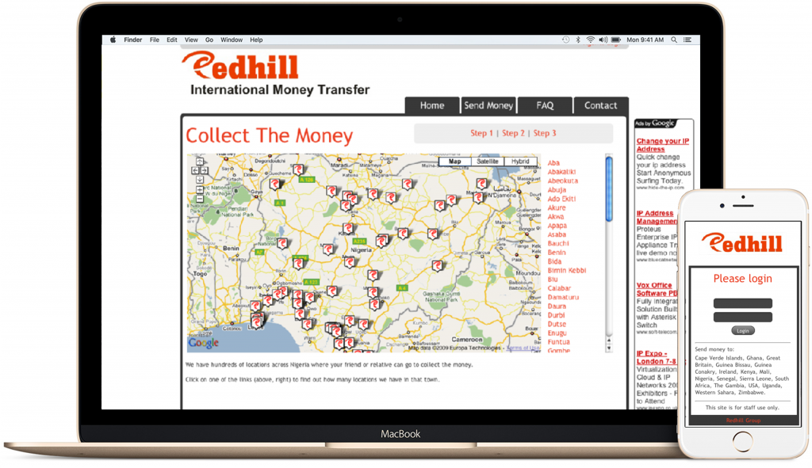

My journey
Lion! Another one. To be successful you’ve got to work hard, to make history, simple, you’ve got to make it.
I grew up in Hackney, East London. I hated being in education and I decided I didn’t want to go to Uni. So, at the grand age of 19 and, with little to no resources, I started nav-poi.com.
The idea was to create Points of Interest that people could download onto their Sat-navs for free. Kinda like, how you use Google Maps to find the nearest restaurant or Train Station. I taught myself front-end web development to get the idea out there and, my father built the back-end.
We got Nav-poi to the stage where it was online and mobile friendly (in 2006!) but, with the exception of a meeting with Virgin Mobile, the idea it didn’t get far. I ended up making websites as a freelancer and, as Projects Officer for a housing association. My father went to work for Rolls Royce.
I had a second go at building a Startup with my father and his business partner. This project was an international money transfer business. At this point, the iPhone had recently launched and to keep operational costs low, I suggested that we make it a mobile friendly platform.
My father and I built the web-based platform and we got the company off the ground but, after about 18 months 2008 hit. It turns out when there is a recession and people lose jobs, they stop sending money home.
Then I decided to focus on marketing…
When the money transfer company didn’t work out, I decided I needed to learn more about sales and marketing. I spent the next year or so, consuming every thing I could on the subjects.
I then went on to do freelance/ consulting for small retailers and startups like Mixtape Madness. Until I ended up at ihorizon where I eventually became the head of Operations and Marketing.
I was the 5th person to join ihorizon and started as an intern. I was promoted several times as I was instrumental in the companies rapid growth. I was the only non-accountant leading the marketing, operations and the re-positioning of the company. In the 18 months I was there we established ourselves as the leading financial firm in London’s Tech City, grew the team to 20+ people and we multiplied the client base.
After ihorizon I took some time off and then decided to focus on helping more businesses scale by starting Armoury Digital.
The aim with the Armoury was to focus on marketing funnels, not simply websites. I worked with everyone from; Professional Services firms, to funded Startups, to boutiques, to multi-award winning YouTube shows, to animation studios, to speakers and fashion influencers.
I then went on to leverage my skill set into building a portfolio of cash generating websites and achieving the 4 Hour Work Week, which lasted for just over a year.
What I do now…
I have always been particularly passionate about making Statups and web based projects. I learned to code HTML/ CSS in 2006 to build a project with my father. I went on to help build a mobile first money transfer platform in 2008. I’ve built countless WordPress sites while working as a Digital Marketing Consultant.
More recently I have stepped back form Marketing and got back into staying up all night to find that missing semicolon. I have always been passionate about creating things and putting them online. Things have really moved on since I started, so I have been getting back up to speed and by taking on Ruby on Rails.
I’m now looking to join an experienced team who ship high quality projects. Ideally working with Rails or modern JS frameworks like React.
If you have got a project I am always happy to meet for a coffee, you never know where a conversation might go…